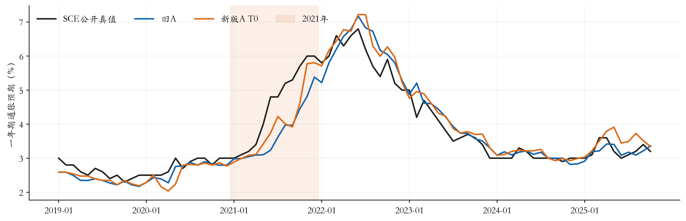
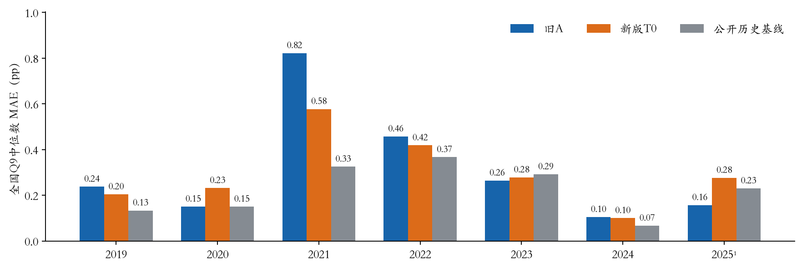
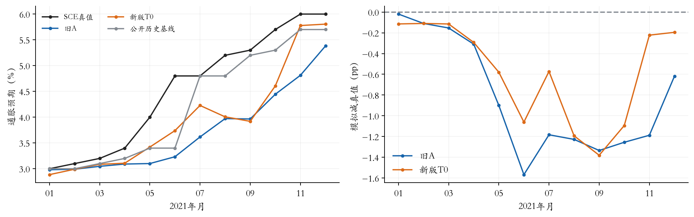

2019-01—2025-10；主指标为个人Q9密度均值的跨人设计加权中位数，与公开全国SCE指标比较。单位pp。
新版T0采用个人作答日前一日截止，新闻、价格、政策等按同一日期筛选；采用4/8/16/32档新闻与CPI相关度1.5，个人警示权重仍为1。旧A为共同月中截止、3/8/20篇随机新闻。其他人口、历史信念、主模型与评分算法沿用。多个环节一起变化，不能把总差异归因于某一个环节。
原名单排除14份跨标称月完成记录，保留41,970个人月并恢复原54格人口质量；182份相同提示旧答复用，新增主请求41,788次、补跑241次，合计42,029次。最终Q8全部得到模型输出，Q9有1份沿用输入起点。新调用API实报$33.0602，未知费预留另列；没有为本次分析新增API。


| 年份 | 旧A MAE | 新版 MAE | 历史基线 | 新版减旧版 |
|---|---|---|---|---|
| 2019 | 0.237 | 0.204 | 0.133 | -0.034 |
| 2020 | 0.150 | 0.231 | 0.150 | +0.081 |
| 2021 | 0.822 | 0.577 | 0.325 | -0.245 |
| 2022 | 0.457 | 0.418 | 0.367 | -0.039 |
| 2023 | 0.264 | 0.278 | 0.292 | +0.014 |
| 2024 | 0.105 | 0.100 | 0.067 | -0.005 |
| 2025 | 0.157 | 0.276 | 0.230 | +0.120 |
2025年仅含1—10月。旧A完整名单与新版合格名单略有不同；将旧答卷放到新版相同名单和权重后，全国MAE为0.318，可检查14份排除是否改变结论。新版有39/82个月的绝对误差低于旧版。

严格同名单/同权重、真人Q9合法的支持上：Q9中心MAE旧0.314、新0.310；W1旧2.121、新2.219；人际IQR旧2.348、新2.248、真人5.261。Q8中心MAE旧0.818、新0.722。这些与全国headline采用不同支持，不能混算。
MAE拟权：2019—2022早48月拟合模拟权重λ=0.0000；2023-01—2025-10后34月冻结组合MAE 0.194，同段历史基线0.194，纯模拟0.215。历史月份参与过研究开发，不能称未触碰的独立盲测。
MSE拟权：2019—2022早48月拟合模拟权重λ=0.1340；2023-01—2025-10后34月冻结组合MAE 0.184，同段历史基线0.194，纯模拟0.215。历史月份参与过研究开发，不能称未触碰的独立盲测。
自动评价未启动属于控制器缩进问题，原生成/补跑与原收据未改；本次调用封存评价器独立离线计算。原始回答和技术失败全部保留。研究配置未因结果再调整，路线B仍是旧B11结果，另行更新。